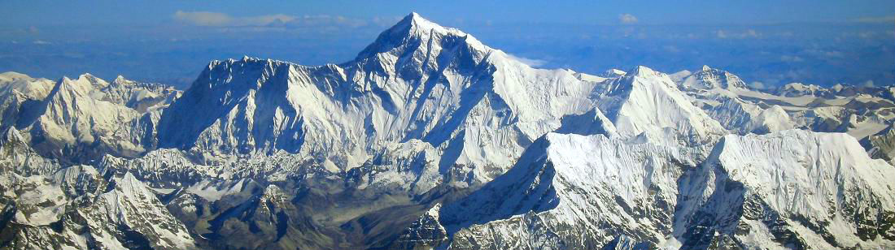

Everest – Dünya Üzerindeki En Yüksek Dağ
Everest (ya da Nepalde Çomolungma da denmektedir), her bir tırmanıcı için 8848,43 metre yüksekliğinde bulunan bir hayaldir, buna rağmen şüphesiz ki Everest, dünya üzerinde bulunan en zorlu ve en ölümcül dağdır. Evet, Everest gezegenimizdeki en yüksek yerdir ve her ülkeden her bir çocuk, bu ünlü dağın zirvesi hakkında bilgi sahibidir. Fakat Everestin keşfi ve Evereste tırmanan kişiler ile ilgili olan gerçek hikâyeler, ne yazık ki insanlar tarafından pek bilinmemektedir. Üzerinde bulunan buzulların hareketlerinden dolayı piramide benzeyen bir forma sahip olan Everest, iki Asya ülkesi olan Çin ve Nepal arasındaki sınırda yükselmektedir.
Şaşırtıcı Gerçek
Bu zirve gerçekten de dünyadaki en muhteşem yer olarak anılmasına rağmen aynı zamanda da ölümcül ve trajik yer olarak da görülmektedir. Bu dağın kayalık silüeti, pek çok kişiyi tırmanma konusunda kendisine doğru çekmiştir. Üzülerek söylemek gerekirse, bu kişilerin çoğu sonsuza kadar bu kayalıklardaki karların içerisinde ve kayalıkların uçurumlarında kalmıştır. 235 in üzerindeki dağcı ve yerel halk, dünyanın en yüksek zirvesine tırmanmaya çalışırken hayatını kaybetmiştir, fakat yine de kesin sayı hala bilinememektedir. Bunun sebebi ise herkesin tırmanış öncesi kendisini kaydetmemesidir. Bu ölümler basınçtan ve düşük hava yoğunluğundan kaynaklanmaktadır ki bu durumda uzun bir süre için nefes almak imkânsızdır, gerçi tehlikelere, dondurucu soğuğa ve soludukları havada yetersiz oksijenin olmasına rağmen pek çok kişi, dünyanın tepesinde çok az bir sürede kalmak için kendi hayatlarını tehlikeye sokmaktadır. Peki, bu görkemli zirveyi özel kılan şey nedir?
Evereste Tırmanmanın Bedeli Ne Kadardır?
Şu aralar bu soru, çok popüler bir sorudur, hepimizin bildiği gibi yüksek irtifalar çıkmak tamamen öde ve oyun oyna tarzındadır ve şunu bilmelisiniz ki dağcılık için fiziksel olarak hazır olmak tek başına yeterli değildir, bununla birlikte ücret ödemek için hazır olmanız gereklidir. Eğer tek başınıza giderseniz bunun ücreti yaklaşık olarak 30 bin $ olur. Seyahat şirketleri rehberli seferler sunmaktadır, bu hizmetin bedeli ise yaklaşın 60 bindır. Telefon ve İnternet erişimini içerisinde barındıran VIP seferler ise 90 binı bulan yüksek rakamlardan oluşmaktadır. Genel olarak bu, paketin içerisinde bulunan servislerin sayısına ve kalitesine, buna ek olarak da rehbere bağlı olmaktadır. Buna rağmen çalışmak için rehberinizi ve şirketinizi seçerken, sadece fiyatı ve sağlayıcının adını seçmemek oldukça önemlidir. Uçuşların da bunlara dâhil olduğunu araştırmak ve görmek, her zaman daha iyi bir yöntemdir. Ayrıca Sherpa hizmetinin dâhil olup olmadığını da görmeniz, tavsiye edilen şeyler arasındadır. Çünkü bazen ana kamp alanında bulunduğunuz zaman Sherpalara da ücret ödemek zorunda kalırsınız, böylece beklenmedik sürprizlerden kaçınmak için mutlaka detaylara göz atmak her zaman daha iyidir.